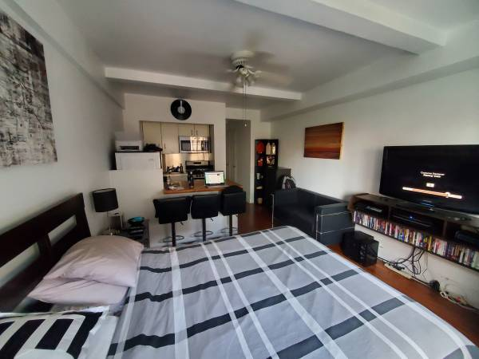

Furnished Studio Midtown East

$1,800
1. Minutes away from United Nations; 5 minute walk to Grand Central, so close to all subway lines
2. 1 Year Lease (Additional discount for 2 year)
3. Building has a gym and laundry, also a doorman and elevator
4. Electricity is included in rent
Requirements: Last Month Rent + 1 Month Security Deposit Required. You must have decent credit and be able to put together a good application package for the building. No pets are allowed by the building for new tenants.
Location: West 142 Street And Broadway